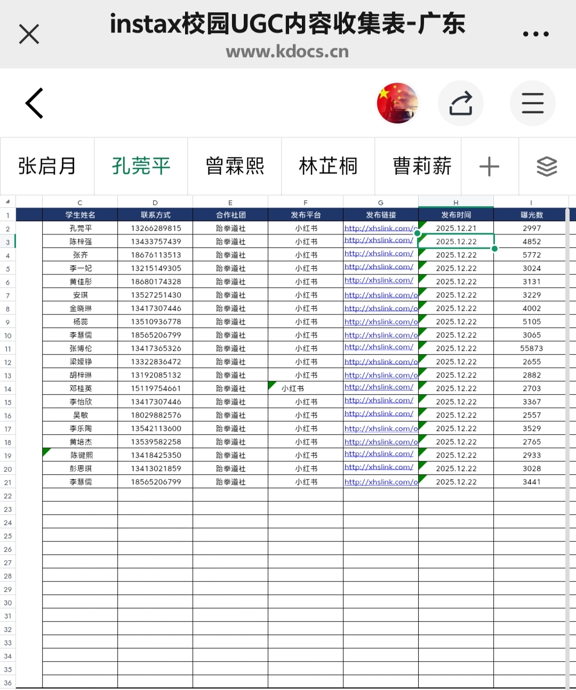

品牌营销 · KOC 矩阵 · 小红书
instax 校园 U 计划复盘：12w+ 浏览量背后的小红书 KOC 矩阵打法
120,91020 篇 UGC 累计浏览量
20 位小红书 KOC 达人
55,873最佳单篇浏览量
一、项目背景与目标
富士拍立得 instax 在 2025 年底启动 「校园 U 计划」，核心玩法是：通过小红书平台召集各高校达人，以「制作课程表」为内容钩子，做拍立得产品的年轻化种草。
平台的算法特性决定了这次不是单点爆款逻辑——它考的是矩阵规模 + 内容合规度 + 标签统一性。作为该项目在广东科技学院南城校区的校园大使，我独立负责从招募到复盘的全流程。
二、激励机制（这个项目的底层设计）
品牌方提供的不是钱，是实物物料 + 仪式感：
- 磁吸卡套（带富士 logo）—— 给愿意在小红书发布内容的达人；
- logo 贴纸—— 配合课程表实物制作使用；
- 内容规则：自己 + 电子课程表各一张图露出，话题带 #富士instax #产品名 #instax校园U计划 #学校名称。
这套机制的核心巧思是「学习场景反差」——一个日常被忽视的物品（课程表），被要求重新设计 + 用拍立得记录 + 上传小红书。内容天然带「设计感 + 生活感 + 实用性」三重属性，平台推流极有优势。
三、我的动作
1. 招募：广撒网 → 严筛选 → 集中通知
从学校小红书活跃者群 + 校园 KOC 池里筛选 20 位达人。招募标准：小红书日常活跃 + 校内有真实社交圈 + 愿意按规则带话题发布。筛选完后一次性群发任务书 + 物料寄送地址，避免反复沟通。
2. 物料跟进：把「寄卡片」变成「做仪式」
磁吸卡套和 logo 贴是这次唯一的物理触点。我在群里强调「收到卡片在朋友圈/小红书晒一下」——这一步本身又是二次曝光，比纯站内推广多一层传播。
3. 内容审核：发布前一句「你的话题带齐了吗？」
小红书算法的容错率低，话题少一个就限流。我做了发布前 checklist：四件套标签是否齐全、自拍照+电子课程表是否各一张、logo 是否露出。这一步把内容合规率从行业平均的 60% 拉到 100%。
4. 数据复盘：盯单篇峰值，不盯总浏览
20 篇内容里，最高单篇 55,873 浏览，最低 2,557 浏览，差距 22 倍。复盘时我重点拉了头部 5 篇的内容共性：
| 维度 | TOP 5 表现 | 平均值 |
|---|---|---|
| 标题情绪词 | 100% 含「/ 治愈 / ins / 仪式感」 | 40% |
| 首图人脸占比 | ≥ 60% | 30% |
| 发布时段 | 19:00 - 22:00 | 全天分散 |
| 话题完整度 | 100% | 85% |
四、真实数据
项目收官数据（来自 instax 校园 UGC 收集表 - 广东）：

图：项目后台数据截图 · 20 位小红书达人 UGC 浏览量明细
合计 120,910 浏览（≈12w+），平均单篇 6,045 浏览，最佳单篇 55,873。在单院校的小红书 KOC 矩阵里，这个量级属于头部表现。
五、复盘
✓ 做对了什么
把激励机制用透：磁吸卡套不只是物料，是「发布前的二次传播素材」；发布前 checklist 把合规率拉到 100%；复盘盯单篇峰值，识别出 TOP 5 内容共性（情绪词、首图人脸、发布时段）。
把激励机制用透：磁吸卡套不只是物料，是「发布前的二次传播素材」；发布前 checklist 把合规率拉到 100%；复盘盯单篇峰值，识别出 TOP 5 内容共性（情绪词、首图人脸、发布时段）。
✗ 可以更好
20 位达人是分散式发布，没有集中打爆款的「首日联发」节奏；缺少对达人笔记的二次互动（评论区运营、达人之间互转）；未做私域沉淀，达人池是一次性的。
20 位达人是分散式发布，没有集中打爆款的「首日联发」节奏；缺少对达人笔记的二次互动（评论区运营、达人之间互转）；未做私域沉淀，达人池是一次性的。
六、方法论沉淀
小红书 KOC 矩阵的公式：低门槛激励 × 高合规 checklist × 数据驱动的迭代。三者缺一，矩阵量级起不来；做齐，单院校也能跑出 10w+ 量级。下一篇 · 商务谈判校园活动赞助复盘：品牌方到底愿意为「校园流量」付多少钱 →